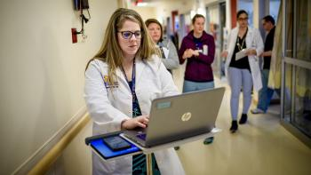
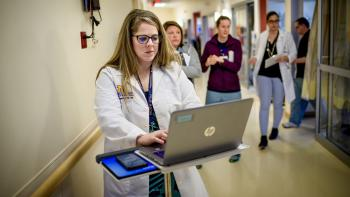

My Journey
I had worked as a NICU dietitian for over a decade before I realized informatics was apart of my everday work. I was manually mining tons of data. Years of data. And as my database grew, I realized I was in over my head.
The Beginning
I had chosen to become a dietitian while working towards my pre-med degree at Bowling Green State University. I initially imagined myself becoming doctor. I, like many who aim to become doctors, wanted to help people.
However, after taking my first nutrition class as an elective, I realized there was a way to help people that was better suited to me. I found the nutrition class intriguing in its own right, but also had a personal investment in nutrition at the time. I went into it thinking I would do standard nutrition counseling, weight loss management. Obesity is pretty strong in my family so I am personally trying to fight against that.
Internship #1
Everything changed when in my dietetic internship, I had my first experience with pediatric nutrition. I had grown discouraged by adult nutrition and the noncompliance of the people I was trying to help. Meanwhile, babies are cute, and caring for them requires some skills I really like to use. To take care of infants nutritionally involves a lot of math and exact calculating; I really liked that.
Fellowship
After passing the registration exam to become a Registered Dietitian Nutritionist, I accepted a fellowship in neonatal nutrition at Baylor College of Medicine. During this fellowship, I had my first opportunity to work with premature infants specifically. It became my passion.
NICU Dietitian
Following fellowship, I worked as a NICU dietitian at Driscoll Children’s Hospital in Corpus Christi, Texas. Driscoll is a single standing children’s hospital and it didn’t have all of the resources that are at Michigan Medicine.
Michigan Medicine
I came to Michigan Medicine in 2012 to relocate my growning family near our other extended family.
As I continued to work as a NICU dietitian, I slowly began to realize the amount of data I was recording. I talked about my curiosity with friends and coworkers, and learned of health informatics, and the MHI program. I knew this was my next chapter.
Health Informatics
Since entering the program, I have learned of the many applications of health informatics beyond clinical health informatics, applications I didn’t previously consider. Everyone in the program comes from many different work backgrounds, and seeing the diverse use of informatics has really taught me alot.
I have been involved in a variety of research projects regarding premature infant health at Michigan Medicine since 2013. The types of research I am involved in haven’t changed yet, but the way I do research has changed as I develop more skills into data mining and data management.
Internship #2
For my internship, I worked to build a dashboard that communicates the status of quality improvement (QI) projects to leadership and care providers in the NICU. The team I was serving currently relies on paper. My mentor, a clinical information specialist, and myself worked to make more information sharing possible by helping the team switch to a paperless approach. It has given me insight into what kinds of data the NICU is interested in and what they’re doing in the background of QI projects.
Family Life
I have two sons: Liam, who is eleven and Declan, who is four. My husband is the secret to making working and schooling full time a possibily. We have been exploring may of Michigans hiking trails since COVID changed our daily routines. Our newest member of the family, a black lab/pointer mix named Tina, goes everywhere with us!
Current
Currently, I continue to work full time as a NICU dietitian, as well as a part time research assistant II for the School of Information, while I look for opportunities to shift my career to full time informatics.
Gallery


 
